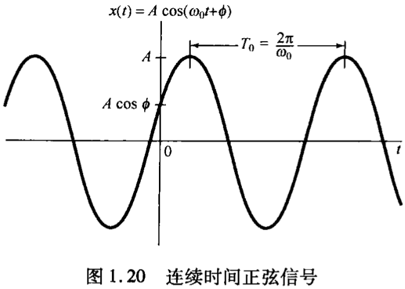
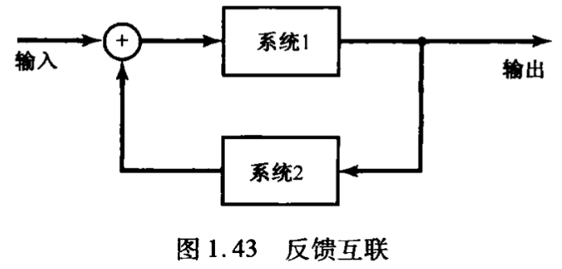

信号与系统

连续时间信号和离散时间信号
信号可以描述范围极为广泛的一类物理现象，在所有的情况下，信号所包含的信息总是寄寓在某种变化形式的波形之中。
在数学上，信号可以表示为一个或多个变量的函数。连续时间信号的自变量是连续可变的，用$x(t)$表示；离散时间信号的自变量仅取在一组离散值上，用$x[n]$表示，也称为离散时间序列。这里的“时间”背后可以是任意因变量，例如坐标，命名只是为了方便。
信号能量与功率
根据实际应用，一个电阻的瞬时功率与其外加电压的关系为$\displaystyle p(t)=\frac{v^2(t)}{R}$，汽车由于摩擦耗散的瞬时功率与速度的关系为$p(t)=bv^2(t)$，我们定义信号的能量与平均功率：
连续时间信号：$\displaystyle E=\int_{t_1}^{t_2}|x(t)|^2\mathrm dt$，$\displaystyle P=\frac{E}{t_2-t_1}$
离散时间信号：$\displaystyle E=\sum_{n=n_1}^{n_2}|x[n]|^2$，$\displaystyle P=\frac{E}{n_2-n_1}$
当考虑无穷区间时：
连续时间信号：$\displaystyle E_\infty=\int_{-\infty}^{+\infty}|x(t)|^2\mathrm dt$，$\displaystyle P_\infty=\lim_{T\rightarrow\infty}\frac{1}{2T}\int_{-T}^{T}|x(t)|^2\mathrm dt$
离散时间信号：$\displaystyle E_\infty=\sum_{n=-\infty}^{+\infty}|x[n]|^2$，$\displaystyle P_\infty=\lim_{N\rightarrow\infty}\frac{1}{2N+1}\sum^{+N}_{N=-N}|x[n]|^2$
根据这些定义我们把信号分为三类：
- 能量信号：信号具有有限的总能量，$E_\infty<\infty$，$P_\infty=0$
- 功率信号：信号有无限的总能量，但平均功率有限，$E_\infty=\infty$，$P_\infty<\infty$
- 信号的总能量和平均功率都是有限的，$E_\infty<\infty$，$P_\infty<\infty$
自变量的变换
本节关注很有限但很重要的几种最基本的信号变换。
自变量的变换举例
时移：形状上相同，位置上有一个移位。


时间反转：将信号以一个时值为轴反转。


时间尺度变换：将信号在线性尺度上缩放。

周期信号
当一个连续时间信号时移$T$后其值不变则称其为周期信号，周期为$T$，$T$的最小正值为其基波周期：
$x(t)=x(t+T)$
当一个离散时间信号时移$N$后其值不变则为周期信号，周期为$N$，$N$的最小正值为其基波周期：
$x[n]=x[n+N]$
一个信号不是周期的就称为非周期信号。
偶信号与奇信号
如果一个信号以原点为轴反转后不变则称其为偶信号：
$x(-t)=x(t)$
$x[-n]=x[n]$
如果一个信号以原点为中心旋转$180^\circ$后不变则称其为奇信号：
$x(-t)=-x(t)$
$x[-n]=-x[n]$
任何信号都能分解为一个偶信号和一个奇信号之和：
$\displaystyle \mathcal{Ev}\{x(t)\}=\frac12[x(t)+x(-t)]$
$\displaystyle \mathcal{Od}\{x(t)\}=\frac12[x(t)-x(-t)]$
$\mathcal{Ev}\{x(t)\}$和$\mathcal{Od}\{x(t)\}$分别称为$x(t)$的偶部和奇部。
指数信号与正弦信号
连续时间复指数信号与正弦信号
连续时间复指数信号具有如下形式：
$x(t)=Ce^{at}$
其中$C$和$a$一般为复数。根据这些参数值的不同，复指数信号有几种不同的特征。
实指数信号
若$C$和$a$都是实数，则$x(t)$称为实指数信号。若$a$是正实数，则$x(t)$随$t$的增加呈指数增长；若$a$是负实数，则则$x(t)$随$t$的增加呈指数衰减。

周期复指数和正弦信号
若$a$为纯虚数，例如如下信号：
$x(t)=e^{j\omega_0t}$
该信号是周期信号，且基波周期$\displaystyle T_0=\frac{2\pi}{|\omega_0|}$
与周期复指数信号密切相关的一种信号是正弦信号：
$x(t)=A\cos(\omega_0t+\phi)$
可知基波周期$T_0$与$\omega_0$成反比，也称$\omega_0$为基波频率，基波频率越大，振荡速率越快。
利用欧拉公式，复指数信号可以用相同基波周期的正弦信号来表示：
$e^{j\omega_0t}=\cos\omega_0t+j\sin\omega_0t$
反之正弦信号可以用相同基波周期的复指数信号来表示：
$\displaystyle A\cos(\omega_0t+\phi)=\frac A2e^{j\phi}e^{j\omega_0t}+\frac A2e^{-j\phi}e^{-j\omega_0t}$
也可用复指数信号的实部和虚部来表示：
$A\cos(\omega_0t+\phi)=A\mathcal{Re}\{e^{j(\omega_0t+\phi)}\}$
$A\sin(\omega_0t+\phi)=A\mathcal{Im}\{e^{j(\omega_0t+\phi)}\}$
周期信号是功率信号，以$x(t)=e^{j\omega_0t}$为例在一个周期内计算该信号的总能量和平均功率：
$\displaystyle E_{period}=\int^{T_0}_0|e^{j\omega_0t}|^2\mathrm dt=\int^{T_0}_01\cdot\mathrm dt=T_0$
$\displaystyle P_{period}=\frac1{T_0}E_{period}=1$
故在无穷多个周期下该信号的总能量是无限大，平均功率依然为$1$。
具有一个公共周期$T_0$的一组复指数信号成谐波关系，可表示为：
$\phi_k(t)=e^{jk\omega_0t},k=0,\pm1,\pm2,\cdots$
则其基波频率为$|k|\omega_0$，基波周期为$\displaystyle\frac{2\pi}{|k|\omega_0}=\frac{T_0}{|k|}$
在第三章中将看到，利用一组成谐波关系的信号作为基本构造单元可以构成各种各样的周期信号。
一般复指数信号
最一般情况下的复指数信号可借实指数信号和周期复指数信号来表示。考虑某一复指数$Ce^{ai}$，将$C$用极坐标，$a$用笛卡尔坐标表示，分别有：
$C=|C|e^{j\theta},a=r+j\omega_0$
那么：
$Ce^{at}=|C|e^{j\theta}e^{(r+j\omega_0)t}=|C|e^{rt}e^{j(\omega_0t+\theta)}$
利用欧拉公式进一步展开为：
$Ce^{at}=|C|e^{rt}\cos(\omega_0t+\theta)+j|C|e^{rt}\sin(\omega_0t+\theta)$
由此可见，若$r=0$，则复指数信号的实部和虚部都是正弦的；若$r>0$，则其实部和虚部是一个振幅呈指数增长的正弦信号；若$r<0$则为振幅呈指数衰减的正弦信号。

具有指数衰减振幅的正弦信号常称为阻尼正弦振荡。
离散时间复指数信号与正弦信号
离散时间信号的复指数信号定义为：
$x[n]=C\alpha^n$①
若令$\alpha=e^\beta$，则另一种表示形式为：
$x[n]=Ce^\beta n$②
在离散时间情况下，往往写成①更为方便实用。
实指数信号
若$C$和$\alpha$都是实数，那么有如下特性：若$|\alpha|>1$，则$x[n]$随$n$呈指数增长；若$|\alpha|<1$，则$x[n]$随$n$呈指数衰减；若$|\alpha|=1$，则$|x[n]|=|C|$。另外，若$\alpha$是正值，则$x[n]$的所有值符号相同；若$\alpha$为负值，则$x[n]$的符号交替变化。

正弦信号
若②中的$\beta$为纯虚数，即$|\alpha|=1$，则得到复指数序列：
$x[n]=e^{j\omega_0n}$
该信号与正弦信号密切相关，即：
$x[n]=A\cos(\omega_0n+\phi)$

利用欧拉公式将复指数和正弦序列联系起来：
$e^{j\omega_0n}=\cos\omega_0t+j\sin\omega_0n$
$\displaystyle A\cos(\omega_0n+\phi)=\frac A2e^{j\phi}e^{j\omega_0n}+\frac A2e^{-j\phi}e^{-j\omega_0n}$
一般复指数信号
一般离散时间复指数信号可以用实指数和正弦信号来表示。将$C$和$\alpha$均以极坐标形式给出：
$C=|C|e^{j\theta},\alpha=|\alpha|e^{j\omega_0}$
那么：
$C\alpha^n=|C||\alpha|^n\cos(\omega_0n+\theta)+j|C||\alpha|^n\sin(\omega_0n+\theta)$
若$|\alpha|=1$，则复指数信号的实部和虚部都是正弦序列；若$|\alpha|>1$，则其实部和虚部是正弦序列乘以一个呈指数增长的序列；若$|\alpha|<1$则乘以一个呈指数衰减的序列。

离散时间复指数序列的周期性质
离散时间指数信号$e^{j\omega_0n}$与其对应的连续时间信号$e^{j\omega_0t}$存在一些重要的差别，其关乎$e^{j\omega_0t}$的两个性质：
- $\omega_0$越大，信号振荡的速率越高。
- $e^{j\omega_0t}$对任何$\omega_0$值都是周期的。
对第一个性质，研究频率为$\omega_0+2\pi$的离散时间复指数信号：
$e^{j(\omega_0+2\pi)n}=e^{j2\pi n}e^{j\omega_0n}=e^{j\omega_0n}$
可知离散时间情况下频率为$\omega_0$的复指数信号与频率为$\omega_0\pm k\pi,k=2,4,\cdots$的复指数信号相同。当$\omega_0$从$0$开始增加，其振荡频率越来越快，直到$\omega_0=\pi$之后，其振荡频率开始下降，直到$\omega_0=2\pi$得到与$\omega_0=0$相同的结果。

对第二个性质，假设$e^{j\omega_0n}$以$N$为周期，则：
$e^{j\omega_0(n+N)}=e^{j\omega_0n}$
$e^{j\omega_0N}=1$
$\omega_0N=2\pi m,m\in\Z$
$\displaystyle\frac{\omega_0}{2\pi}=\frac mN$
当且仅当$\displaystyle\frac{\omega_0}{2\pi}$为有理数，$m$和$N$才能都取整数，$e^{j\omega_0n}$是周期的。这一结论对离散时间正弦信号也成立。此时，其基波周期为$\displaystyle m\frac{2\pi}{\omega_0}$，基波频率为$\displaystyle\frac{2\pi}N=\frac{\omega_0}m$，$m$和$N$无公因子。
一组成谐波关系的周期离散时间复指数信号的频率为基波频率$2\pi/N$的整数倍，为：
$\phi_k[n]=e^{jk(2\pi/N)n},k=0,\pm1,\pm2,\cdots$③
在连续时间情况下，成谐波关系的信号互不相同。而在离散时间情况下：
$\phi_{k+N}[n]=e^{j(k+N)(2\pi/N)n}=e^{jk(2\pi/N)n}e^{j2\pi/N}=\phi_k[n]$
这意味着③给出的一组信号中仅有$N$个互不相同的周期复指数信号。
单位冲激函数与单位阶跃函数
离散时间单位脉冲序列和单位阶跃序列
单位脉冲是最简单的离散时间信号，定义为：
$\delta[n]=\left\{\begin{matrix}0,n\ne0\\1,n=0\end{matrix}\right.$
第二个基本的离散时间信号是离散时间单位阶跃，定义为：
$u[n]=\left\{\begin{matrix}0,n<0\\1,n\geqslant0\end{matrix}\right.$

离散时间单位脉冲是离散时间单位阶跃的一次差分：
$\delta[n]=u[n]-u[n-1]$
离散时间单位阶跃是离散时间单位脉冲的求和函数：
$\displaystyle u[n]=\sum_{m=-\infty}^n\delta[m]$

令$k=n-m$得：
$\displaystyle u[n]=\sum_{k=-\infty}^n\delta[n-k]=\sum_{k=0}^n\delta[n-k]$

对上式的一种解释是把$u[n]$看作是一系列延迟脉冲的叠加，即$n=0$时发生的$\delta[n]$，$n=1$时发生的$\delta[n-1]\cdots$等的和。
单位脉冲序列可用于一个信号在$n=0$时的采样，因为$\delta[n]$仅在$n=0$时为非零值，所以有：
$x[n]\delta[n]=x[0]\delta[n]$
若更一般地考虑在$n=n_0$时的采样，则乘以发生在该处的单位脉冲：
$x[n]\delta[n-n_0]=x[n_0]\delta[n-n_0]$
采样将在第七章具体讨论。
连续时间单位阶跃函数和单位冲激函数
连续时间单位阶跃函数定义为：
$u(t)=\left\{\begin{matrix}0,t<0\\1,t>0\end{matrix}\right.$
单位阶跃在$t=0$不连续。
连续时间单位冲激函数$\delta(t)$与单位阶跃的关系和离散时间情况下类似，即连续时间单位阶跃是单位冲激的积分函数：
$\displaystyle u(t)=\int_{-\infty}^t\delta(\tau)\mathrm d\tau$
连续时间单位冲激可看成连续时间单位阶跃的一次微分：
$\displaystyle\delta(t)=\frac{\mathrm du(t)}{\mathrm dt}$
但正规来$t=0$时$u(t)$不可微。我们考虑将$u(t)$解释成下图$u_\Delta(t)$的一种近似，$u_\Delta(t)$从$0$升到$1$在一个较短的时间间隔$\Delta$内完成：

则$u_\Delta(t)$的微分$\delta_\Delta(t)$是一个持续期为$\Delta$的短脉冲，且对任何$\Delta$值其面积都为$1$。当$\Delta\rightarrow0$，$\delta_\Delta(t)$越来越窄、越来越高，但始终保持单位面积，其极限形式为：
$\displaystyle \delta(t)=\lim_{\Delta\rightarrow0}\delta_\Delta(t)$
由此，$\delta(t)$没有持续期，但有面积，于是我们用一个箭头来刻画，其高度表示该冲激的面积：

对冲激函数的进一步认识将在第二章讨论。
与离散时间情况一样，将积分函数的积分变量$\tau$置换为$\sigma=t-\tau$，得到连续时间单位阶跃和单位冲激函数之间关系的另一种形式：
$\displaystyle u(t)=\int_{-\infty}^t\delta(\tau)\mathrm d\tau=\int_{\infty}^0\delta(t-\sigma)(-\mathrm d\sigma)=\int^{\infty}_0\delta(t-\sigma)\mathrm d\sigma$

与离散时间情况一样，连续时间冲激函数也具有一个很重要的采样性质：
$x(t)\delta(t-t_0)=x(t_0)\delta(t-t_0)$
连续时间系统和离散时间系统
一个系统可以看成一个过程，输入信号在过程中被变换，或者说系统以某种方式对信号作出相应。
连续时间系统的输入输出信号都是连续时间信号：
$x(t)\rightarrow y(t)$
离散时间系统的输入输出信号都是离散时间信号：
$x[n]\rightarrow y[n]$
系统用方框图表示：

系统的互联
两个系统级联时，信号先由系统1处理，再由系统2处理；两个系统并联时，信号分别由系统1、2处理再求和，如下图所示（其中$\bigoplus$表示相加）：

两个系统的反馈互联时，系统1的输出是系统2的输入，系统2的输出反馈回来与外加的输入信号组成系统1的真正输入，如下图所示：
下图是一个RC并联电路的反馈互联系统的例子：

基本系统性质
有记忆系统与无记忆系统
无记忆系统的输出仅仅取决于该时刻的输入，例如：
$y[n]=(2x[n]-x^2[n])^2$
恒等系统是一种特别简单的无记忆系统：
$y(t)=x(t)$
有记忆系统的输出还取决于过去或将来的输入输出值，一个例子是累加器：
$\displaystyle y[n]=\sum^n_{k=-\infty}x[k]$
另一个例子是延迟单元：
$y[n]=x[n-1]$
可逆性与可逆系统
一个系统若在不同的输入下导致不同的输出，则称该系统是可逆的，且有一个逆系统存在。当该逆系统与原系统级联后就会得到一个恒等系统。

因果性
若一个系统在任何时刻的输出只取决于现在的输入及过去的输入，该系统就称为因果系统，也称为不可预测的系统，因为无法根据系统的输出预测未来的输入。
所有无记忆系统都是因果的，一些数据处理系统如语音、图像等往往是非因果系统。
稳定性
若一个系统在输入有界的情况下输出也有界，则该系统具有稳定性。例如单摆是一个稳定系统，而累加器是一个非稳定系统。
时不变性
若一个系统的特性和行为不随时间而变，该系统就是时不变的。例如$y(t)=\sin[x(t)]$是一个时不变系统，而$y(t)=x(t)\sin t$是一个时变系统。
线性
令$y_1(t)$是一个连续时间系统对输入$x_1(t)$的响应，$y_2(t)$是其对应于输入$x_2(t)$的响应，那么一个线性系统应有如下性质：
- 可加性：$y_1(t)+y_2(t)$是对$x_1(t)+x_2(t)$的响应。
- 比例性/齐次性：$ay_1(t)$是对$ax_1(t)$的响应，$a$为任意复常数。
将定义一个线性系统的两个性质结合在一起可写成叠加性质：
$\displaystyle\sum_ka_kx_k(t)\rightarrow\sum_ka_ky_k(t)$
该性质对离散时间线性系统也成立。
本章完